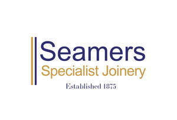

Trade Mark Journal No.2025/047 21 November 2025
UK00004293116 11 November 2025 (2,6,7,8,19,20,37,40)

- Class 2
- Varnishes for use in cabinet-making; Varnish for the decoration of wood.
- Class 6
- Metal joinery fittings; Ironmongery; Fittings of metal for furniture; Furniture (Fittings of metal for -); Architectural metalwork for use in building; Cupboard fittings of metal.
- Class 7
- Wood lathes; Plywood jointing machines; Jointers being woodworking machines; Sanding machines [for woodworking]; Woodturning lathes; Circular saws [for woodworking]; Woodworking machines; Wood planing machines; Machinery for shaping wood; Wood sawing machines; Plywood finishing machines.
- Class 8
- Mortise chisels; Mortice chisels; Clamps for carpenters or coopers.
- Class 19
- Joinery products of timber for use in buildings; Timber mouldings; Wood panelling; Timber laminates; Construction timber; Wood paneling; Wood fibreboard; Sawn timber; Timber (Sawn -); Wood sheeting; Wood laminates; Wood moldings; Moulded wood; Timber panels; Wood joints; Wood veneers; Sawn wood; Panelling of non-metallic materials for use in construction; Panelling materials (Non-metallic -) for use in construction; Construction elements of timber; Plywood; Balustrading; Wood; Timber boarding; Wood for construction purposes.
- Class 20
- Panelling for furniture; Prefabricated doors of wood for furniture; Cabinetwork; Sections of panelling for furniture; Partitions of wood for furniture; Furniture partitions of wood; Furniture (Partitions of wood for -); Wood carvings; Decorative wooden panels [furniture]; Wooden panels for furniture; Wooden shelving [furniture]; Furniture moldings; Bathroom fittings in the nature of furniture; Door furniture made of wood; Furniture made from wood; Wood bedsteads; Bedsteads of wood; Bedsteads [wood]; Decorative edging strips of wood for use with fitted furniture; Non-metallic fittings for furniture; Wooden furniture.
- Class 37
- Carpentry; Construction of staircases of wood; Carpentry services; Furniture varnishing; Carpentry contractor services.
- Class 40
- Joinery services [custom manufacturing of woodwork]; Joinery [custom manufacture]; Woodworking; Moulding of furniture; Wood-working; Sawing of timber; Planing of timber; Laminating of wood.
J. Seamer & Son Ltd
Representative: Haseltine Lake Kempner LLP